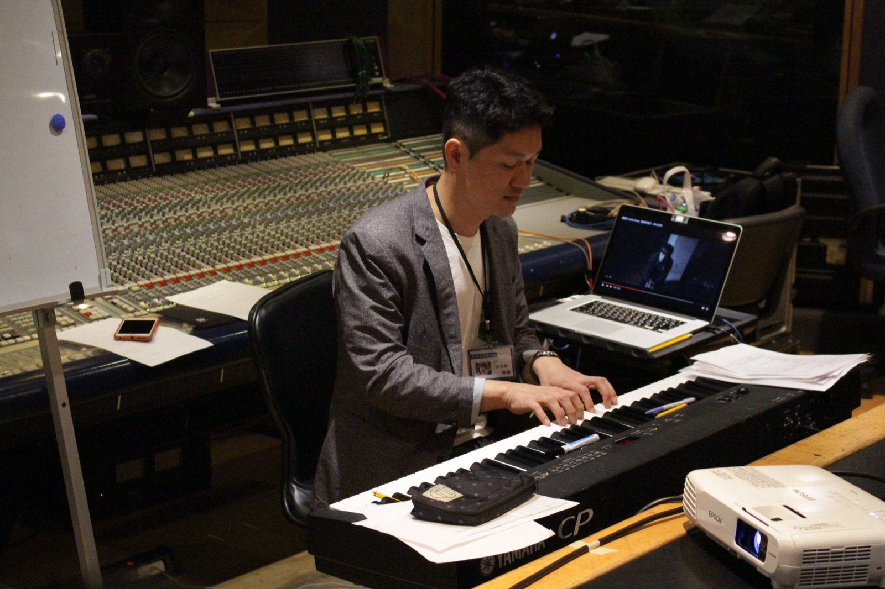

懂樂理就不會喜歡流行音樂？！
當代流行音樂真正迷人的地方，很多恰好不是五線譜能完整表現的。
Read note ↗Taipei · Taiwan
音樂製作人・詞曲創作者・電影配樂Music Producer · Songwriter · Film Composer
01 / About
林尚德 Shang-Te Lin is a Taiwan-based music producer, songwriter, and film composer affiliated with Harvest Music 大禾音樂. Moving between film and recorded music, his work is grounded in emotional clarity, close collaboration, and a lifelong commitment to the craft of music.

02 / Recognition
52nd Golden Horse Awards
Best Original Film Score
第52屆金馬獎 · 最佳原創電影音樂
Jury & Professional Service
03 / Official Profiles
The official and professional profiles below all represent 林尚德 Shang-Te Lin — 音樂製作人・詞曲創作者・電影配樂 / Music Producer · Songwriter · Film Composer.
facebook.com/bala.guitar
@balaguitar
林尚德 · Artist
林尚德 · Artist
@bala9666
Shang-Te Lin · Composer
林尚德 · LIN Shang-Te
04 / Music Notes
從製作、創作與聆聽出發，記下聲音背後值得再想一次的事。
05 / Connect
For production, songwriting & film scoring
與我聯絡 · Contact
sd.lin@dhmusic.cc